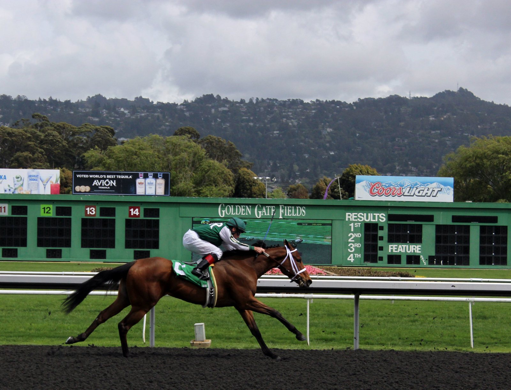

Gordon Elliott vuelve a Far Hills para defender el American Grand National con Zanahiyr y Western Fold
El preparador lleva este fin de semana cinco caballos al American Grand National de Far Hills. El año pasado ganó allí cinco de las seis carreras de la reunión, entre ellas la principal con Zanahiyr.

Jack Kennedy montará a Western Fold, y será Danny Gilligan quien suba a Zanahiyr, el ganador de la carrera principal la pasada edición. Gordon Elliott explicó la elección sin rodeos: «Zanahiyr nos ha dado mucho, pero ya no es ningún jovencito, y probablemente Jack se ha quedado con las piernas más jóvenes. Los dos caballos están en buena forma».
El terreno puede alterar ese reparto. «Ahora está lloviendo bastante allí, y eso podría favorecer más a Zanahiyr que a Western Fold», apuntó el preparador. No espera, en todo caso, un piso castigado: «Seguramente la pista seguirá estupenda. Ha llovido mucho estos dos últimos días, pero no me preocupa».
Elliott cruza el Atlántico con cinco ejemplares repartidos en cuatro carreras distintas. «Todos han viajado en buena forma y tenemos muchas ganas», resumió.
El precedente es difícil de igualar. En la última edición ganó cinco de las seis pruebas del programa de Far Hills. La sexta era una carrera lisa en la que no podía presentar a ningún caballo. «Fue uno de mis mejores días como preparador. Viajar al otro lado del mundo y sacar cinco ganadores en la misma reunión fue increíble», recordó.
Aun así, rebaja las expectativas: «Llevamos un buen equipo, pero no sé si todo puede salir tan rodado como el año pasado. Tenemos opciones en todas».
Far Hills le ha dejado además algo más que trofeos. «Ha sido un sitio de mucha suerte para nosotros. Hemos conseguido muchos clientes gracias a él, propietarios americanos, y ha sido estupendo».
Fichas: Jack (caballo)
Por Martín Larrañeta